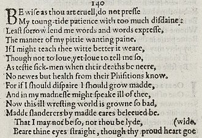
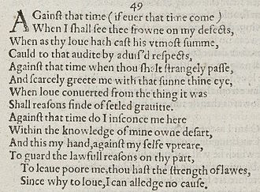
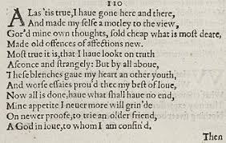

THE SONNET GENERATOR
DISPLAY SONNET HERE.



FUN FACTS
Get to know some fun facts about sonnets!
Who invented the sonnet?
Giacomo Da Lentini (also known as Jacopo Da Lentini), a thirteenth-century Sicilian poet.

Where is the theme of the sonnet found?
The last two lines, i.e, in the couplet.
Who invented the Shakespearean sonnet?
Not Shakespeare.Henry Howard, Earl of Surrey was the first to write shakespearean sonnets.
CONTACT
Suggestions? Drop a note!
Kerala, India
Email: mail@mail.com
Email: mail@mail.com
Email: mail@mail.com
Email: mail@mail.com